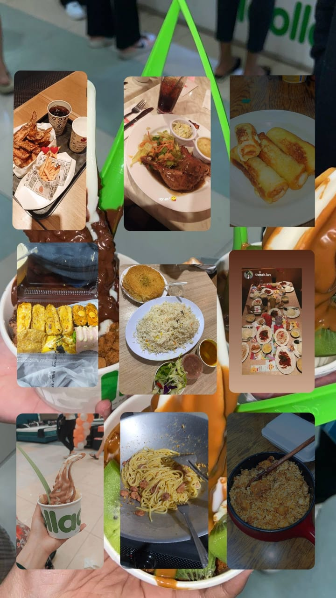

HOBBIES
I LOVE EATING SO MUCH !!!
I'm a person who enjoys food. Since I don't have a food allergy to certain foods like nuts or seafood, for example, I genuinely love all kinds of cuisine. I've always gone on food hunting excursions with my friends. visit the new and viral foods on social media.
I'll take a photo of the meal I just bought and post it to Instagram before I eat it. I like engaging in this activity. I've taken a lot of food-related photos and videos to save the memories or share on social media. So far, every dish I've tasted and eaten has been delicious and beautifully presented.
I enjoy every dish I've tasted thus far. I love eating everything and everything. I enjoy eating, thus I don't have a particular favourite food because, to me, any cuisine is good and ends up becoming my favourite food. I have no trouble gaining weight since I love food. this is due to the fact that I discovered that regardless of how much food I consumed, I continued to be slim. This works to my benefit.
Finally, I desire to learn more about the many food options so I can sample them and experience their goodness. In addition, I want to visit other countries so I can sample their cuisine, which is undoubtedly excellent and unique in its own right. I enjoy cooking in addition to liking food. In the future, I wish to learn a wide range of interesting and delectable recipes.
MY FAVOURITE DISH AROUND MALAYSIA

MY FAVOURITE DISH AROUND MALAYSIA:
LIST OF MY FAVOURITE DISH
- Terengganu (keropok lekor)
- Pahang (tempoyak ikan patin)
- Perak (nasi ganja)
- Johor (laksa johor)
- Negeri Sembilan (masak lemak cili api)
- Melaka (asam pedas)
- Kelantan (nasi kerabu)